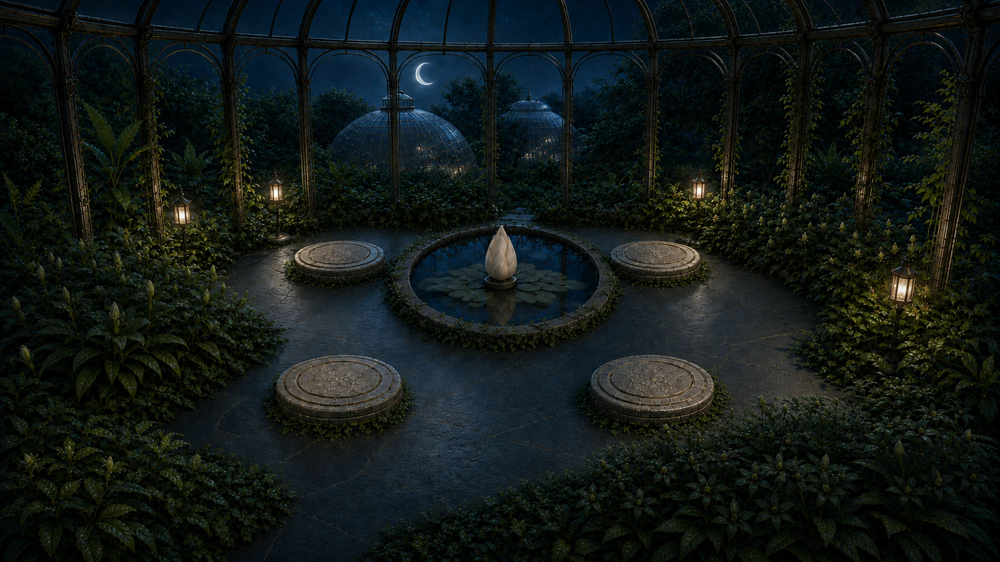

LUNA LIGHT GARDEN
세 군락을 깨우고, 중앙 Lotus에 빛을 보내세요.
◇
꽃 군락 복구
0 / 3
가이드
Ⅱ

정원 복구 완료
정원이 다시 숨 쉬어요
모든 꽃과 중앙 연꽃이 깨어났어요.
LUNA LIGHT GARDEN
가이드
미션 미리 해보기
다시 연습
LUNA LIGHT GARDEN
01
02
03
이 정원 게임에는 JavaScript가 필요해요.